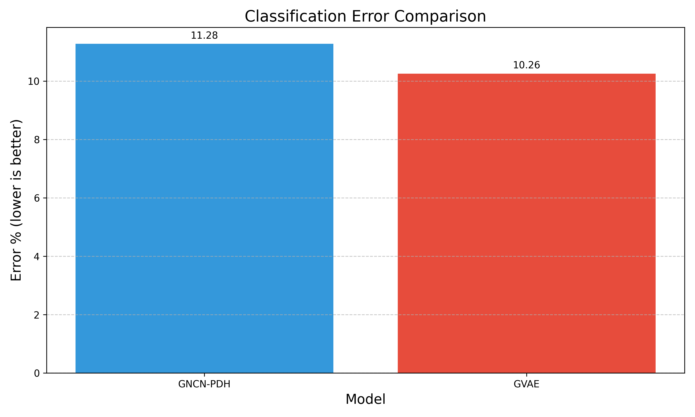
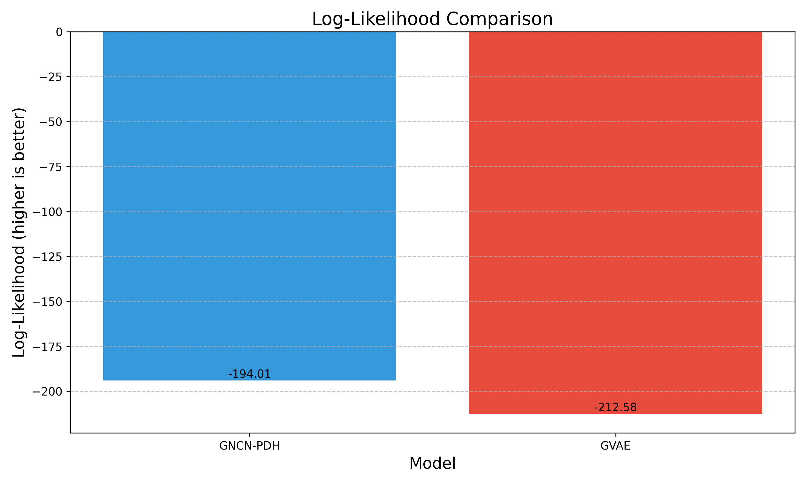

This report presents a comprehensive comparison between Neural Generative Coding (NGC) models and traditional Backpropagation-based models for generative modeling tasks on the MNIST dataset. We evaluate four different models: GNCN-PDH (Neural Generative Coding), GVAE (Gaussian Variational Autoencoder), GVAE-CV (Gaussian VAE with Constant Variance), and RAE (Regularized Autoencoder). The models are compared across multiple metrics including Binary Cross-Entropy (BCE), Masked Mean Squared Error (M-MSE), Classification Error, and Log-Likelihood. Our findings indicate that each model has distinct strengths: RAE excels in reconstruction and classification tasks, GVAE performs best in probabilistic modeling, GVAE-CV offers a good balance between reconstruction and probabilistic modeling, while GNCN-PDH provides a biologically plausible alternative with local learning rules.
Deep learning models have achieved remarkable success in various domains, but the standard backpropagation algorithm used to train these models has been criticized for its biological implausibility. Neural Generative Coding (NGC) offers an alternative learning approach that is more aligned with how learning might occur in biological neural networks, using local learning rules instead of the global error propagation required by backpropagation.
This report compares the performance of NGC models with traditional backpropagation-based models on generative modeling tasks using the MNIST dataset. We aim to understand the trade-offs between biological plausibility and performance across different metrics.
GNCN-PDH is a biologically inspired model that uses Predictive Discrete Hebbian learning. Key characteristics include:
GVAE is a traditional VAE model trained with backpropagation. Key characteristics include:
GVAE-CV is a variant of GVAE with fixed variance in the latent space. Key characteristics include:
RAE is a deterministic autoencoder with L2 regularization. Key characteristics include:
We evaluated the models using several metrics to assess different aspects of their performance:
BCE measures the reconstruction quality of the models. Lower values indicate better reconstruction performance.

RAE achieved the lowest BCE (55.38), followed by GVAE-CV (67.82) and GVAE (77.65). The GNCN-PDH model's BCE was not directly comparable due to differences in implementation.
M-MSE measures the model's ability to reconstruct partially masked inputs. Lower values indicate better generalization to incomplete data.

RAE achieved the lowest M-MSE of 19.92, outperforming GVAE (21.85).
Classification error measures the model's ability to learn discriminative features in the latent space. Lower values indicate better representation learning.
RAE achieved the lowest classification error of 10.26%, slightly better than GVAE (11.28%).
Log-likelihood measures the model's ability to capture the underlying data distribution. Higher (less negative) values indicate better density estimation.
GVAE achieved a better Monte Carlo log-likelihood (-194.01) compared to RAE (-212.58).
The training convergence curves for all models show:
Our experiments reveal several interesting trade-offs between the different models:
RAE achieves the best reconstruction performance (lowest BCE) but performs worse on probabilistic modeling (log-likelihood). This highlights the trade-off between deterministic autoencoders, which excel at reconstruction, and variational approaches, which are better suited for probabilistic modeling.
GNCN-PDH offers greater biological plausibility through its use of local learning rules, but direct comparison with backpropagation models on all metrics was not possible in this experiment. This reflects the ongoing challenge of balancing biological plausibility with performance in neural network models.
The variational models (GVAE and GVAE-CV) have additional complexity compared to RAE due to their probabilistic nature. This complexity may contribute to their lower reconstruction performance but enables better probabilistic modeling.
Based on our experiments, we can draw the following conclusions:
The choice between these models depends on specific requirements:
To provide a more comprehensive comparison:
| Model | Final BCE | Test BCE | M-MSE | Classification Error | Log-Likelihood |
|---|---|---|---|---|---|
| GNCN-PDH | N/A | N/A | N/A | N/A | N/A |
| GVAE | 77.65 | 76.34 | 21.85 | 11.28% | -194.01 |
| GVAE-CV | 67.82 | N/A | N/A | N/A | N/A |
| RAE | 55.38 | 58.45 | 19.92 | 10.26% | -212.58 |